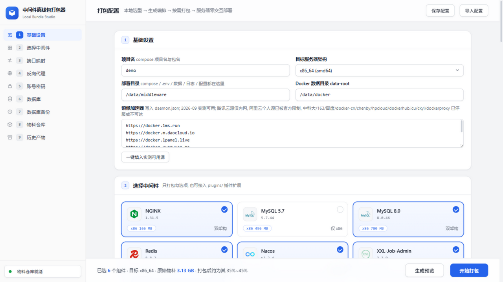
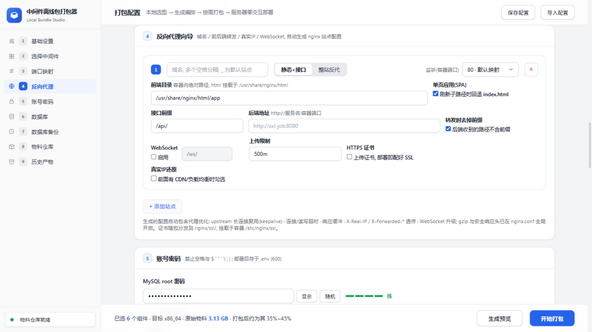
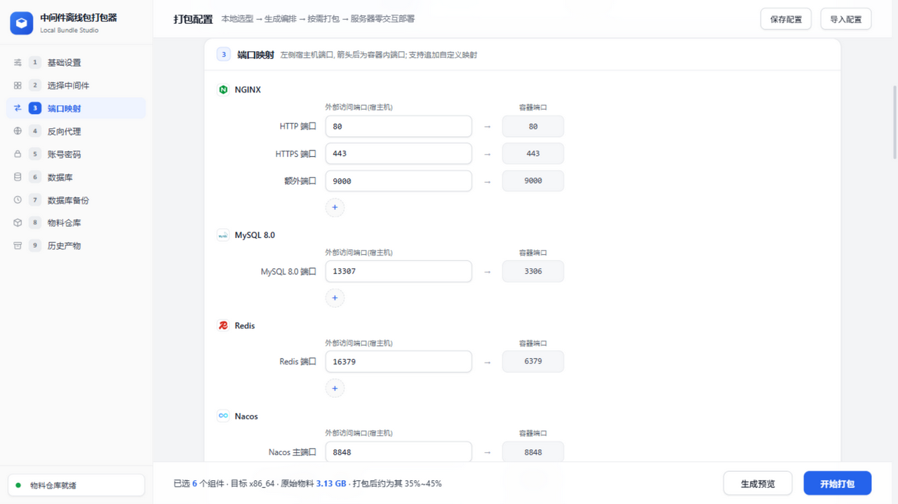
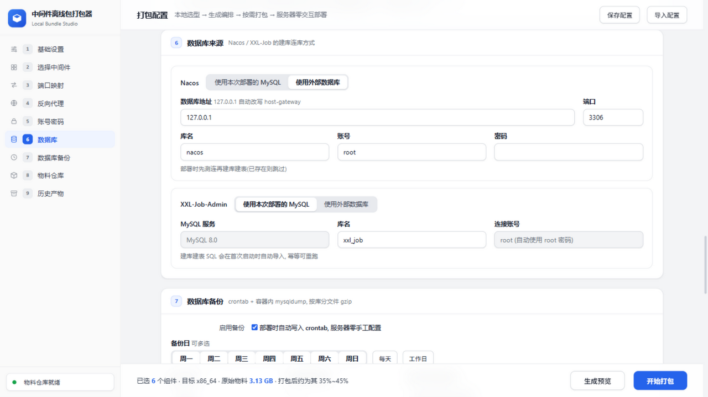

在本地 Web 界面上选好中间件、端口、密码、数据库与备份策略，一键打出只含所需物料的离线包； 服务器解压后 ./deploy.sh 一条命令完成 Docker/Compose 离线安装与全部中间件部署， 自动生成部署报告并贴出运维命令。




全部决策在打包时完成，服务器上不问任何问题，root 执行一条命令即可。
预检只用 df 与 /proc/net/tcp，健康实测 curl→wget→bash /dev/tcp 三级降级，没装网络工具也能跑。
已装 Docker 跳过、已有表跳过导库、旧配置自动备份，重复执行安全。
容器健康检查 + 宿主机 HTTP 实测双保险，结果 ✓/✗ 写进部署摘要与部署报告。
自动生成部署报告.txt：环境、清单、健康、账号安全、备份策略、运维命令。
按站点生成 nginx 配置，WebSocket / 真实IP / 上传限制 / HTTPS 证书随包分发。
crontab + 容器内 mysqldump 按库 gzip 轮转，restore.sh 一条命令恢复指定库。
一个插件文件 + 镜像 tar 即接入新中间件，已内置 PostgreSQL 15.19 插件。
① 本地打包（克隆仓库后执行）
python packer.py # 浏览器打开 http://127.0.0.1:8765 # 选中间件 → 端口/密码/数据库 → 开始打包 # 产物: dist/xxx-offline.tar.gz (+ .sha256)
② 服务器部署（离线内网，root 执行）
tar -xzf xxx-offline.tar.gz cd xxx-offline ./deploy.sh # 全程零交互 # 部署完成自动生成 部署报告.txt # 日志查看: docker compose logs -f